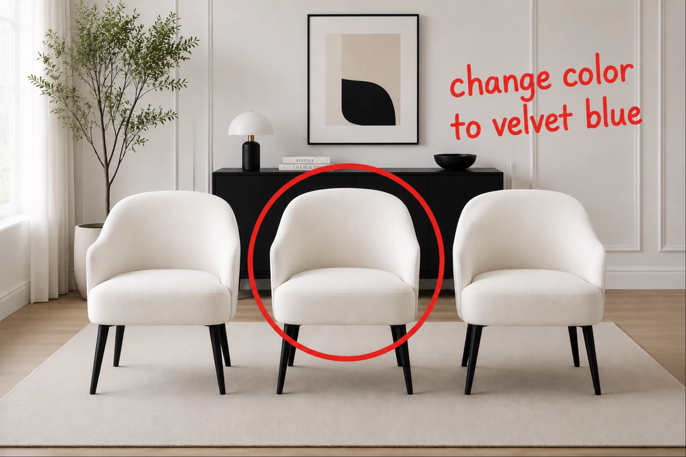
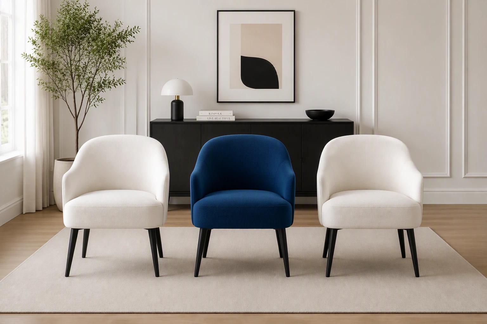
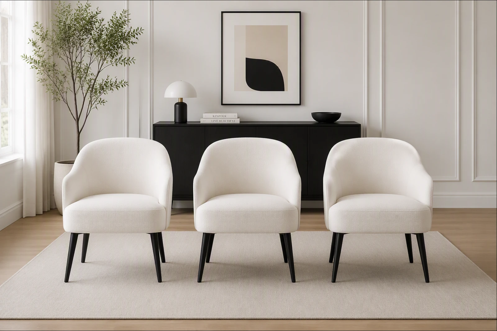
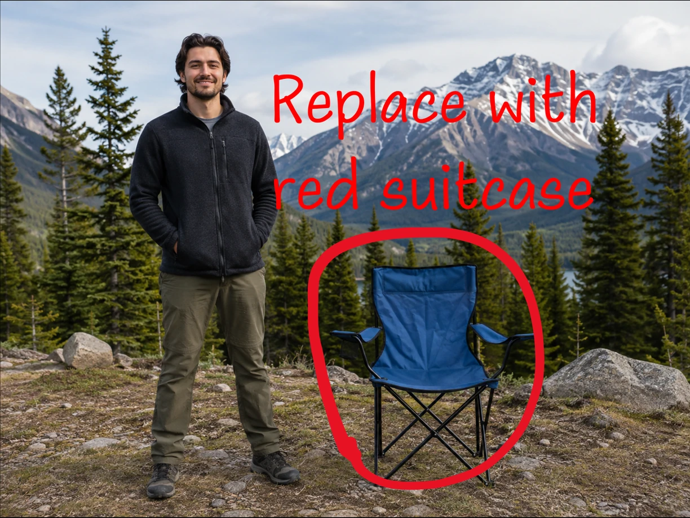
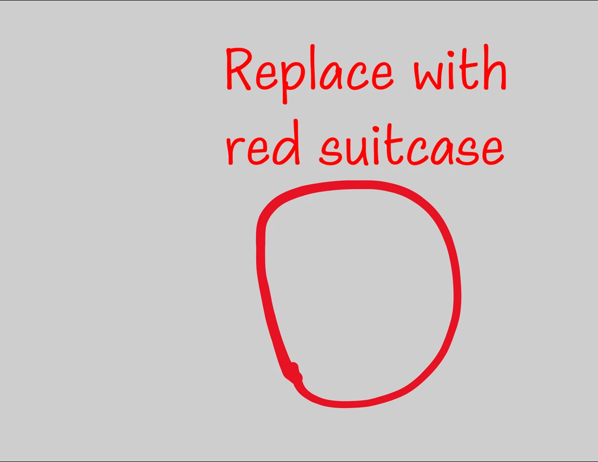
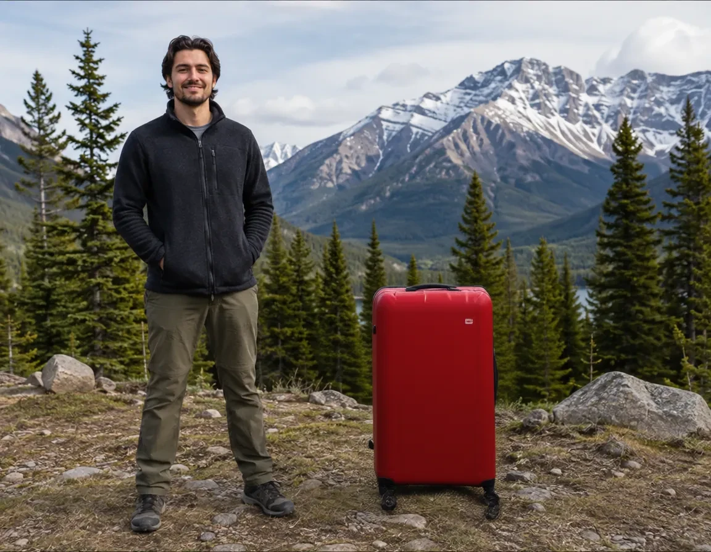
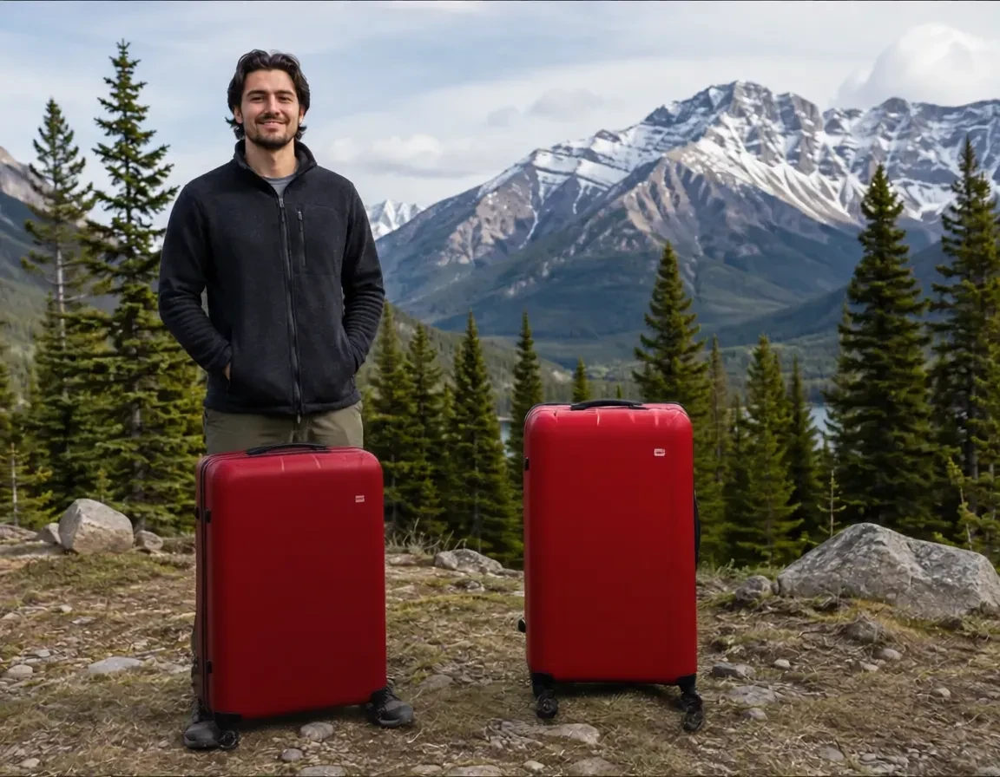
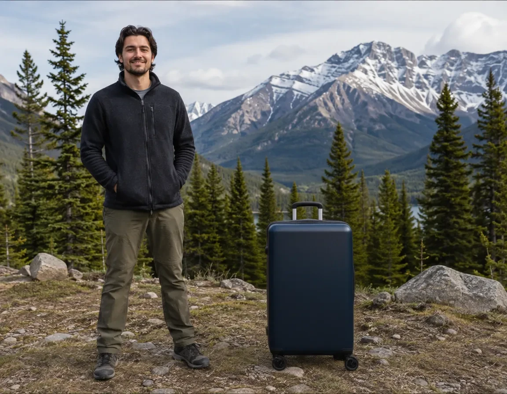

VibeEdit.
Image Editing with Canvas Instructions


Overview
Canvas instructions specify what to change and where to edit directly on the image.
VibeEdit uses canvas instructions: spatial marks and optional short notes drawn on the image. They identify the target and describe the change, even when several objects look alike. The model supports addition, removal, replacement, attribute modification and movement without a separate text prompt.
Read the full abstract
In text-guided image editing, describing the desired change is often straightforward, but identifying the intended object or region can be cumbersome, especially when several objects look alike. We introduce a new image editing interface that lets users place spatial marks and optional short notes directly on the image. Together, these annotations form a canvas instruction that specifies where to edit and what to change. Our editor, VibeEdit, follows these instructions to perform object addition, removal, replacement, attribute modification, and movement without a separate text prompt. We construct 1.55 million source–target edit pairs with object masks and structured edit descriptions, from which we render canvas instructions during training. We adapt Qwen-Image-Edit with layer-decoupled conditioning that separately encodes source images and canvas instructions for image editing. We train the model with region-weighted supervised fine-tuning, followed by rubric-guided reinforcement learning to improve edit completion, local edit quality, and preservation of unedited regions. We evaluate VibeEdit on an independently constructed, human-curated benchmark of 419 cases emphasizing target selection among similar objects. VibeEdit achieves a VLM rubric score of 79.9 and an outside-region PSNR of 32.8 dB, compared with 67.4 and 24.0 dB for FireRed, the highest-scoring text-instructed baseline in our evaluation.
Interface
Mark the target and write a short note directly on the image. VibeEdit uses these canvas instructions to make the edit.
Circle
Select an object or an empty region.
Scribble
Mark an object to remove.
Write
Describe the new content or attribute.
Drag
Connect the source and destination.
Change the middle chair to blue
Circle the chair, add a color note, and let VibeEdit make the change.

Animation of a recorded result.
Method
VibeEdit adapts Qwen-Image-Edit with separate source and canvas conditioning, region-weighted supervised training, and reinforcement learning.

Annotated image A = I ⊕ C
Canvas layer C̄Qwen-Image-Edit DiT
Separate source and canvas conditioning
Qwen2.5-VL reads the annotated image. The VAE separately encodes the clean source and the canvas marks. The DiT uses these inputs to produce the edit. The encoders and original DiT weights remain frozen; rank-128 LoRA adapters are trained.
Region-weighted supervised fine-tuning
Increase the loss weight over the edited object and the canvas marks. Keep supervision on the rest of the image.
Emphasize the edit and mark removal
Pixels inside the dilated region receive 2.5× the usual loss weight. All other pixels keep a weight of 1.
Region shapes are schematic. The paper uses object masks and rendered annotation masks, with 50 px dilation before latent downsampling.
The mask is used only to weight the training loss. Users do not provide a mask at inference.
Rubric-guided reinforcement learning
Sample several edits for the same instruction, evaluate them, and use the rewards to update the model with DiffusionNFT.
1. Sample candidate edits
12 rollouts per condition · 4 illustrations below


Candidates shown above are illustrations from the paper’s pipeline figure.
2. Compute a reward for each edit
The reward rubric has three groups, each containing multiple yes/no sub-questions. Below are question excerpts quoted from the appendix; the applicable questions depend on the edit type.
Yes 1No 0Edit success
Appendix excerpt · Addition“Was {object_desc} added clearly and primarily inside the red TARGET bbox, while fitting the local scene?”
Outside preservation
Appendix excerpt · Shared“Did the edited image avoid unrelated extra edits beyond the requested visual instruction?”
Local edit quality
Appendix excerpt · Shared“Does the edited TARGET region fit naturally into the surrounding scene?”
Rubric pass rate
Fraction of all applicable sub-questions answered “yes”, across the three groups.
Preservation penalty
Subtract 0.3 if outside-region PSNR is below 25 dB.
3. Update with DiffusionNFT
Rewards determine how much each rollout contributes to the two training branches.
Add noise to a rollout latent.
Both use the same zₜ, timestep and edit condition.
Expressions use β = 1, as in the paper.
Minimize weighted reconstruction losses with reference regularization.
View the original model pipeline FIGURE 3
Open full-resolution PDFData
We construct source–target image pairs offline and render canvas instructions during training.
- 1
Select and segment
Florence-2 proposes objects. GPT-5.6-sol selects an editable target and describes the change. SAM 3 produces the object mask.
- 2
Generate edit pairs
Use the generators below to produce edited targets. Store each pair with its object masks and structured edit descriptions.
- 3
Filter and annotate
GPT-5.6-sol filters low-quality pairs. During training, render varied circles, scribbles, arrows and short notes from the stored records.
| Edit type | Pair generation | Stored pairs |
|---|---|---|
| Addition / removal | ObjectClear removes an object; reverse the pair for addition. | 435,496 |
| Attribute modification | Qwen-Image-Edit changes a selected attribute. | 458,154 |
| Replacement | FLUX.1 Fill replaces an object inside an expanded mask. | 393,440 |
| Movement | Qwen-Image-Edit moves the object; SAM 3 finds its destination mask. | 266,972 |
Addition/removal pairs are counted once. Counts exclude online reversals and annotation variations. RL conditions are selected by high reward variation across sampled edits.
View the original data pipeline FIGURE 2
Open full-resolution PDFResults
We evaluate whether the model completes the requested edit on the correct target and preserves the rest of the image.
VibeEdit benchmark
An independent, human-curated set of 419 cases. Images often contain similar-looking objects, making target selection challenging.
Each case includes a human-specified edit region and intended change. Text-instructed baselines receive a detailed external prompt, averaging 21.3 words. VibeEdit receives the source image and canvas instruction.
Metrics
- VLM rubric score (%)
- A fixed GPT-5.6-sol judge checks edit success, outside preservation and local edit quality with binary questions. Per-case pass rates are averaged within each task, then equally across the five tasks.
- Outside-region PSNR (dB)
- Compares source and output pixels outside a padded edit region. Higher values indicate better preservation. This metric is evaluated alongside edit success.
Full comparison
| Method | Add | Remove | Modify | Replace | Move | Overall |
|---|
Visual-only baselines receive the annotated image. Text-instructed baselines receive the source and an external instruction. VibeEdit receives the source and canvas layers without a separate text prompt.
Examples
Drag the divider to compare the canvas instruction and edited image. Select “Enlarge” to see both images in full.
@unpublished{zhao2026vibeedit,
title = {VibeEdit: Image Editing with Canvas Instructions},
author = {Zhao, Jinjing and Wei, Fangyun and Wang, Yitong
and Wu, Xiuyu and Chen, Yunuo and Yue, Yang
and Zhang, Sirui and Wang, Wenbo and Zhang, Hongyang
and Chen, Dong and Lu, Yan and Xu, Chang},
year = {2026},
note = {Manuscript}
}